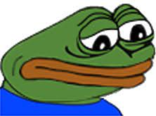

Az oldal története
Ez az oldal 2022.06.01.-én alakult meg, mivel info házit kellett írnom.
Ennél fogva a mesterműveket, amiket láttál az oldalon nem fogod tudni megvásárolni max csak kinyomtatod a képeket.
 Elnézést kérek, ha valakiben hamisan keltettem reményt azzal kapcsolatban hogy egy ilyen alkotás fogja a szobája falát érinteni a nap 24 órájában!
És sajnálatos módon friss műveket sem találsz majd mivel visszavonulok a művészi karrieremből.